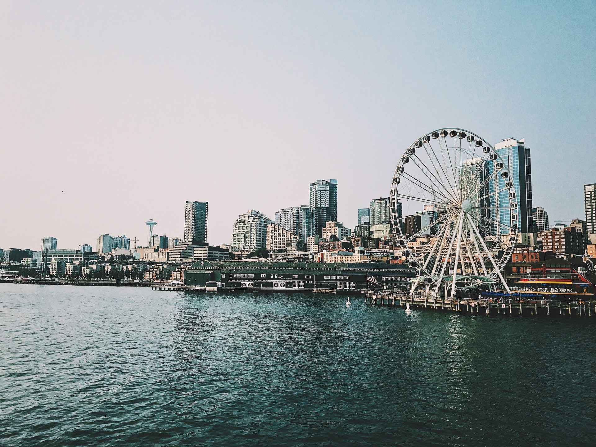
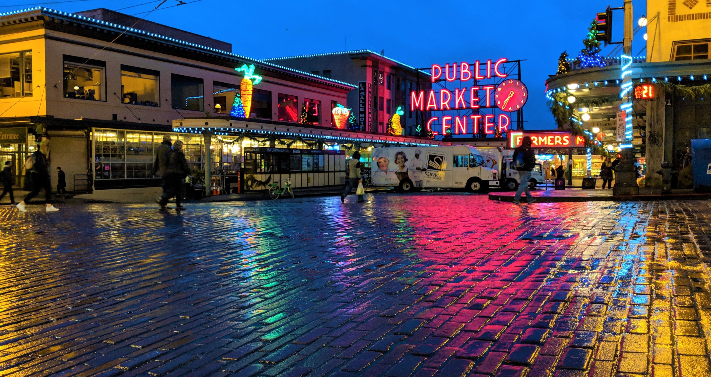

Welcome Content



Hover over the image to see the effect.
Covid Content
Attractions Content
TOURIST ATTRACTIONS

Space Needle
The Space Needle is one of the most recognizable landmarks in the world and is a treasured Seattle icon.
Address
400 Broad St, Seattle, WA 98109

Mount Rainier National Park
Mount Rainier , also known as Tahoma or Tacoma, is a large active stratovolcano in the Cascade Range of
the
Pacific Northwest, located in Mount Rainier National Park about 59 miles (95 km) south-southeast of
Seattle
Address
Mount Rainier National Park

Seattle Great Wheel
The Seattle Great Wheel is a giant Ferris wheel at Pier 57 on Elliott Bay in Seattle, Washington. At an
overall height of 175 feet (53.3 m), it was the tallest Ferris wheel on the West Coast of the United
States
when it opened in June 2012
Address
1301 Alaskan Way, Seattle, WA 98101

Chihuly Garden and Glass
Chihuly Garden and Glass is an exhibit in the Seattle Center showcasing the studio glass of Dale
Chihuly. It
opened in May 2012 at the former site of the Fun Forest.
Address
305 Harrison St, Seattle, WA 98109


Space Needle
Address:
400 Broad St, Seattle, WA 98109
Hours:
- Monday - Wednesday: 11:00AM - 6:00PM
- Thursday - Sunday: 11:00AM - 9:00PM
Price:
- Regular: $32.50 to $37.50
- Senior (ages 65+): $27.50 to $32.50
- Youth (ages 5-12): $24.50 to $28.50
Introduction:
The Space Needle is an observation tower in Seattle, Washington, United States. Considered to be an icon
of
the city and the Pacific Northwest, it has been designated a Seattle landmark. Located in the Lower Queen
Anne
neighborhood, it was built in the Seattle Center for the 1962 World's Fair, which drew over 2.3 million
visitors. Nearly 20,000 people a day used its elevators during the event.
Resources:

Social & Night Life Content